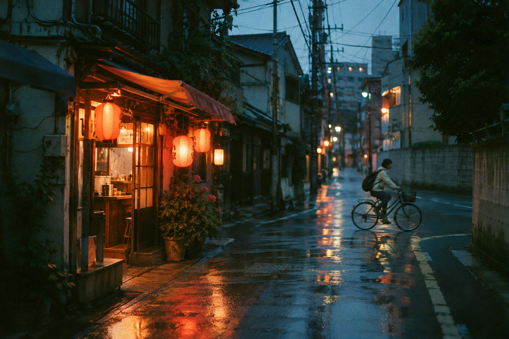

SMALL LOOPS. BIG FEELINGS.
A LITTLE LESS
PERFECT.
A LOT MORE
ALIVE.
Life doesn’t happen in stills.
Catch it in five frames. Let it live on a loop.
Get early access ↗
IN DEVELOPMENT FOR iOS & ANDROID
KURO / STOCK STUDY 001音のない記憶
KURO LIVE VIEW01—05

KARE ’09ISO 400
+
AF ▣FRAME 01 / 05EV +0.0
↑ PICK A STOCK. PRESS THE SHUTTER.Illustrative browser demo
A little grain. A little movement. A moment on repeat.
FIVE FRAMES✳NO EDIT SCREEN✳ALL FEELING✳FIVE FRAMES✳NO EDIT SCREEN✳ALL FEELING✳
01 / THE IDEANOT QUITE A PHOTO.
NOT QUITE A VIDEO.
VERY MUCH A MOMENT.
The blur of a bike. The last light on the walk home. That thing your friend does.
KURO turns a tiny slice of life into a five-frame loop. Enough movement to take you back. Enough space to leave something to the imagination.
01 THE FIRST GLIMPSE02 THE IN-BETWEEN03 RIGHT HERE04 ALMOST GONE05 AND AGAIN ↶
ONE MOMENT / FIVE FRAMES / ON REPEATILLUSTRATIVE FRAME STUDY
02 / CHOOSE YOUR CHARACTER
THREE STOCKS.
ZERO NEUTRAL.
A stock is a point of view.
Choose yours before you shoot.
The grain, the color, the rhythm. All in.
03 / THE RITUAL
MAKE A CHOICE.
MAKE A MEMORY.
THEN LET IT BE.
01Load your mood.
Pick a stock. Set your exposure. Find something worth noticing.
02Feel the shutter.
A short burst. A five-frame loop. The choices are already made.
03Keep it. Or burn it.
No retouching rabbit hole. Keep the feeling, or leave it behind. Export the loops you love as video.
COMING INTO FOCUSBE HERE
FOR FRAME ONE.
We’re making a camera with a little more character.
Leave your email. We’ll let you know when it’s ready.
THE KURO EARLY-ACCESS LIST